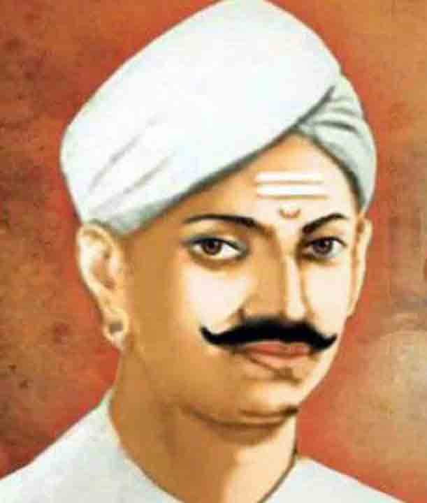

Mangal Pandey

Indian independence fighter
Indian independence fighter
About the Legend
☛ Mangal Pandey was born in Nagwa, a village in upper Ballia district, Uttar Pradesh, India.
☛ He served as a sepoy (infantryman) in the 34th Bengal Native Infantry (BNI) regiment of the British East India Company.
☛ On March 29, 1857, at the Barrackpore cantonment near Calcutta, Pandey attacked British officers, sparking further rebellion.